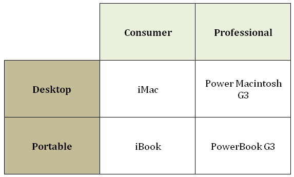
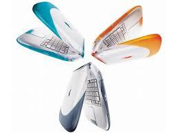

The iBook had 3 different designs during its lifetime. The first, known as the “Clamshell”, was in-spired by the design of Apple’s popular iMac line at that time. It was a significant departure from previous portable computer design due to its shape, bright colours, incorporation of a handle into casing, lack of a display closing latch, lack of a hinged cover over the external ports and built-in wireless networking.
In 1990s, Apple was trimming its product line from the bewildering variety of intersecting Performa, Quadra, LC, Power Macintosh and PowerBook models to a simplified “4 box” strategy: desktop and porta-ble computers, each in both consumer and professional models. Three boxes of this were already in place: The newly introduced iMac was the consumer desktop, the PowerBook G3 filled the professional desktop box, and the PowerBook line was served as the professional portable line. This left only the consumer port-able space empty, leading to much rumour on the internet of potential designs and features. Putting an end to this speculation, on July 21, 1999, Steve Job unveiled the iBook G3 during the keynote presentation of Macworld Conference & Expo, New York City.
Like the iMac, the iBook G3 had a PowerPC G3 CPU, and no legacy Apple interfaces. USB, Ethernet, modern ports and an optical drive were standard. The ports and an optical drive were standard. The ports were left uncovered along the left side, as a cover was thought to be fragile and unnecessary with the iBook’s new interfaces, with lacked the exposed pins of earlier connectors. When the lid was closed, the hinge kept it firmly shut, so there was no need for a latch on the screen. The hinge included an integrated carrying handle. Additional power connectors on the bottom surface allowed multiple iBook G3s to be charged on custom-made rack. The iBook G3 was the first mac to use Apple’s “Unified Logic Board Archi-tecture”, which condensed all of the machine’s core features into two chips, and added AGP and Ultra DAM support.
The iBook was the first mainstream computer designed and sold with wireless networking. On the iBook’s introduction, Phill Schiller, Apple’s VP of Marketing, held an iBook while jumping of a height as data fro computer was transferred to another in order to demonstrate the wireless card. Lucent helped cre-ate the wireless capability which established the industry standard. Apple released Airport Wireless Base Station at the same time.
There was heated database over many things such as the aesthetics, features, weight, performance and pricing. To provide sufficient impact protection, the iBook was larger and heftier than the PowerBook of the time, and yet had lower specifications. Standard features like PC Card slots were absent, and so were speculated features such as touch screens and an ultra-long battery life. The iBook gained the label “Bar-bie’s toilet seat”, due to the distinctive design. Nevertheless, this same design, this same design made the iBook G3 unmistakable in movies and television shows.
The iBook was a commercial success. The line continually received processors, memory, hard disk up-grades and new colours. FireWire and video out were later added. The design was discontinued in May 2011, in favour of the new “Dual USB” iBooks.
The design was clearly influenced by Apple’s consumer desktop, the iMac. In fact one of the market-ing slogans fir the iBook was “iMac to go”. The clamshell design also echoed eMate 300. Apple continued its trend of using transparent coloured plastics for the shell, and released the iBook clamshell series in sev-eral colours, starting with Blueberry and Tangerine, later adding indigo, Graphite and Key Lime colours. However, unlike the iMac, the iBook did not featured pinstripes. Steve Jobs announced that the Key Lime colour, “a little less conservative, a litter more fun”, was exclusive to the online Apple Store. This resulted in some crowd members booing, to which jobs relied: “Don’t you like buying on the Apple Online Store?”
Compared to follow-up iBook and PowerBook notebook computers, the clamshell iBook proved to be the more reliable model. The original iBook is on exhibition at the London Design Museum and the Yale University Art Gallery. Vestiges of design ideas first adopted in the iBook G3 can still be seen today: mov-ing interface ports from the back to the sides leaving them uncovered, omitting a latch for the computer’s lid, and proving multiple colour options.
The original iBook’s only customer-serviceable parts were RAM and AirPort card, accessed via two slots under the keyboard. No other modifications were possible in-warranty. There was no PCMIA port for additional expansion capabilities. 40 screws need to be removed to access Hard Drive. The optical drive, however, can be accessed for more easily, requiring only 11 screws and one standoff to be removed. Later on, some users transplanted a 1024 x 768 LCD from more recent white iBook into a clamshell iBook. This is only possible with the “FireWire” and “FireWire SE” models, as they have 8 MD of video RAM; the old-er ones only have 4 MB.
All clamshell iBook shipped with MacOS 8.6 or 9.0. All clamshell iBooks supported MacOS X 10.0 trough 10.3.9.MacOS X v10.4 “Tiger” can also be installed
‘Source – website like wikipidea, macworld, macspecs, etc’